Product Overview
Agro Shade Nets are manufactured using 100% virgin HDPE and UV stabilizers
to ensure long-lasting outdoor performance. These nets regulate sunlight,
reduce heat stress and improve airflow, creating an optimal microclimate
for crops and plants.
Key Features
- Controls sunlight intensity and temperature
- Improves airflow while reducing heat stress
- UV stabilized for long-term outdoor durability
- Available in multiple shade factors and GSMs
- Custom sizes and colours available on request
Specifications
- Material: 100% Virgin HDPE (UV Stabilized)
- Shade Factors: 50%, 75%, 90%
- Weight: Approx. 40 GSM to 350 GSM
- Widths: 1.5 m to 6 m
- Roll Length: 50 meters
- Colours: Green, Black, Beige, Silver
- Lifespan: 3–5 years (normal outdoor use)
Applications & Use Cases
- Agriculture and horticulture
- Greenhouses and nurseries
- Vegetable and fruit farming
- Construction shading and dust control
- Poultry, dairy and livestock farms
- Parking areas and outdoor commercial spaces
Best Suited For
- Growers requiring controlled sunlight for crop yield optimization
- Nurseries and greenhouses managing temperature stress
- Sites needing long-term outdoor shading with low maintenance
Selection Note
Shade percentage and GSM should be selected based on crop type,
regional climate, and installation height.
Commonly Used Along With
- Agro Shade Net Clips
- Support wires or GI structures
- Weed Mats for ground protection
Product FAQs
-
How do I choose the correct shade percentage for my crop?
Shade percentage depends on crop sensitivity, regional sunlight intensity, and season.
For example, vegetables often use 50–75% shade, while nurseries and orchids may require up to 90%.
-
What GSM should be selected for long-term outdoor installations?
Higher GSM nets (above 120 GSM) are recommended for permanent or semi-permanent structures
as they provide better strength and longer service life.
-
Is this agro shade net suitable for Indian weather conditions?
Yes. The net is UV stabilized and designed to withstand high sunlight exposure,
heat, and varying monsoon conditions common across India.
-
Can agro shade nets be used for non-agricultural purposes?
Yes. They are widely used for parking shades, construction sites, livestock sheds,
and dust control where sunlight and heat reduction is required.
-
What is the expected lifespan of the shade net?
Under normal outdoor use and correct installation, the shade net typically lasts
between 3 to 5 years depending on GSM and environmental exposure.
-
Does the shade net affect air circulation?
No. The knitted structure allows airflow while reducing direct sunlight,
helping maintain a balanced microclimate.
-
Are custom sizes and colours available for bulk orders?
Yes. Custom widths, lengths, GSMs, and colours can be supplied for bulk or project-based requirements.
 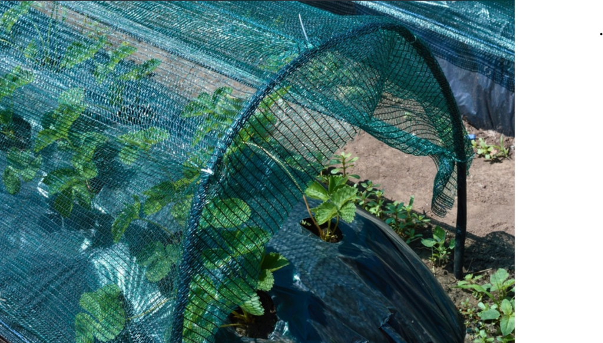
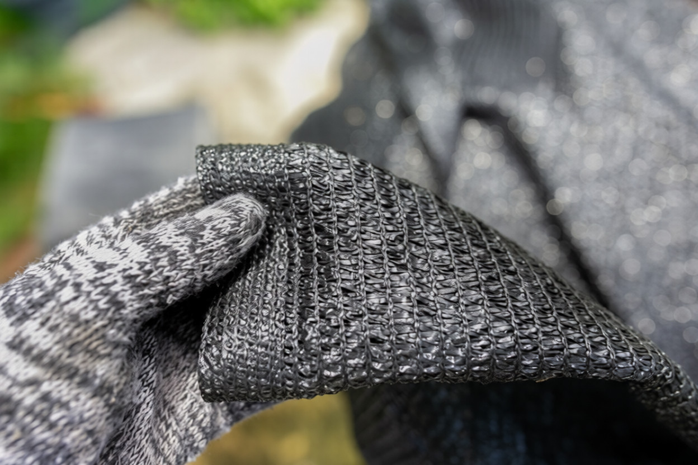
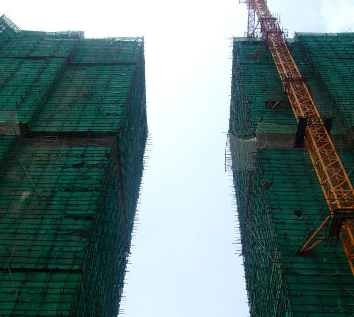
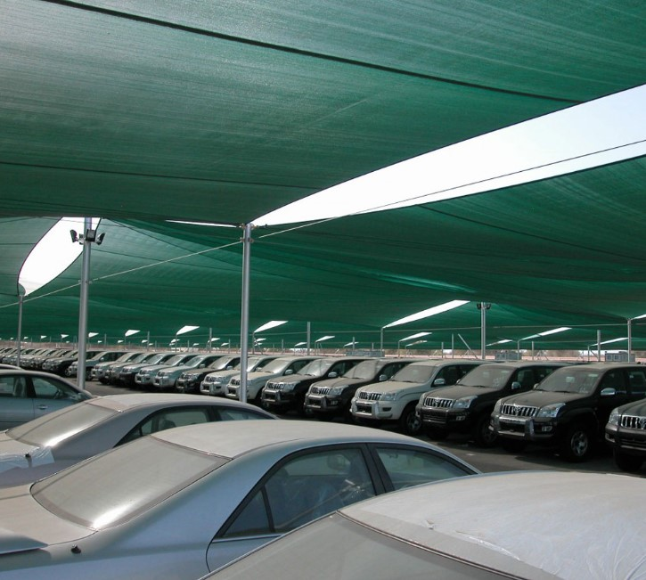
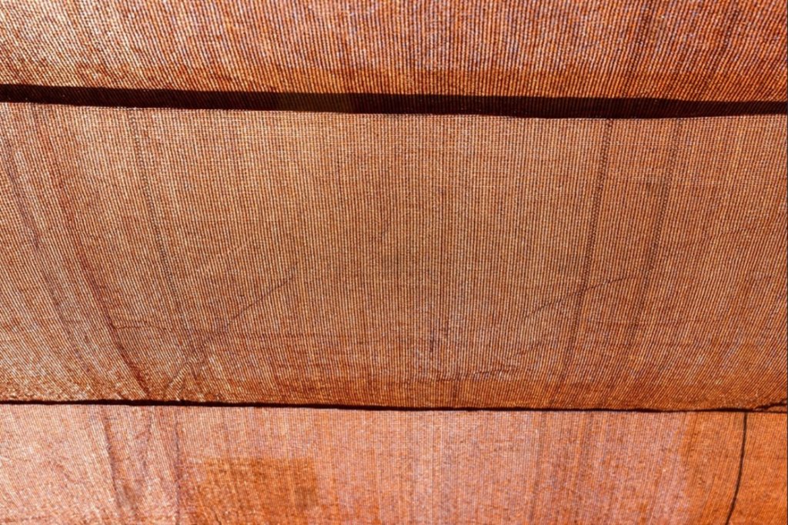
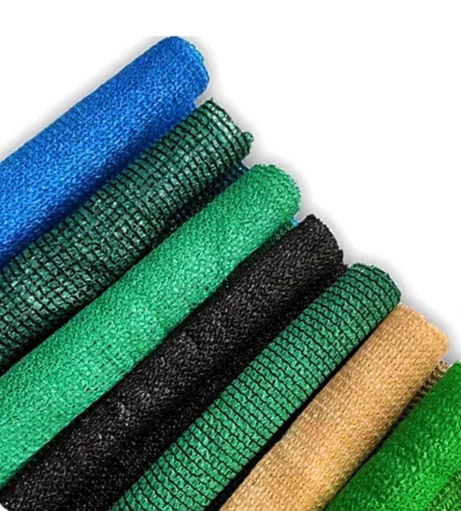
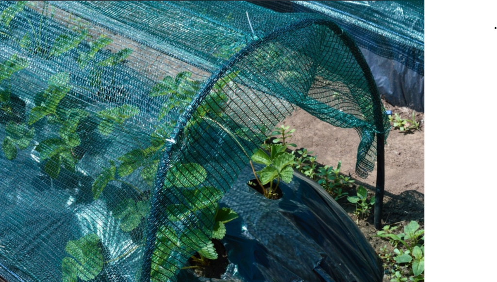
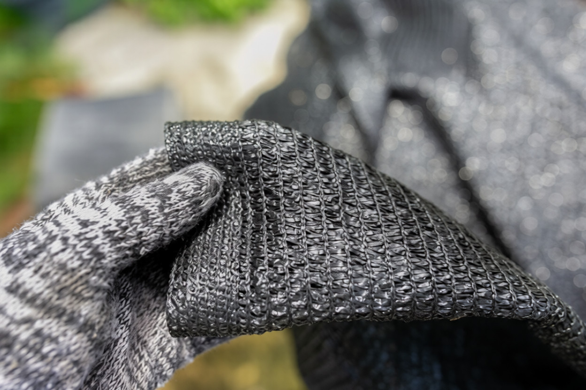
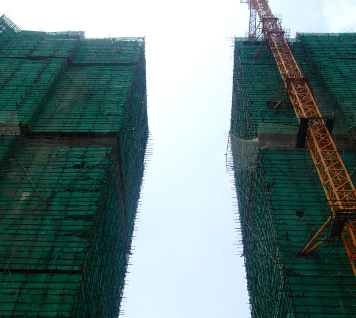
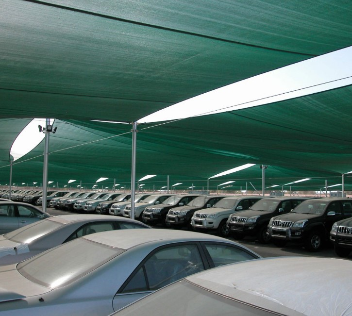
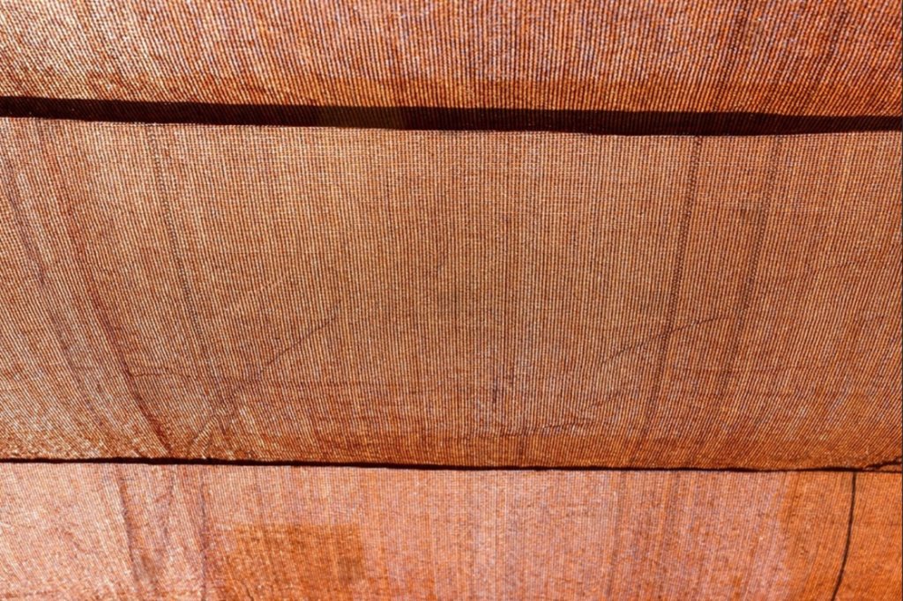
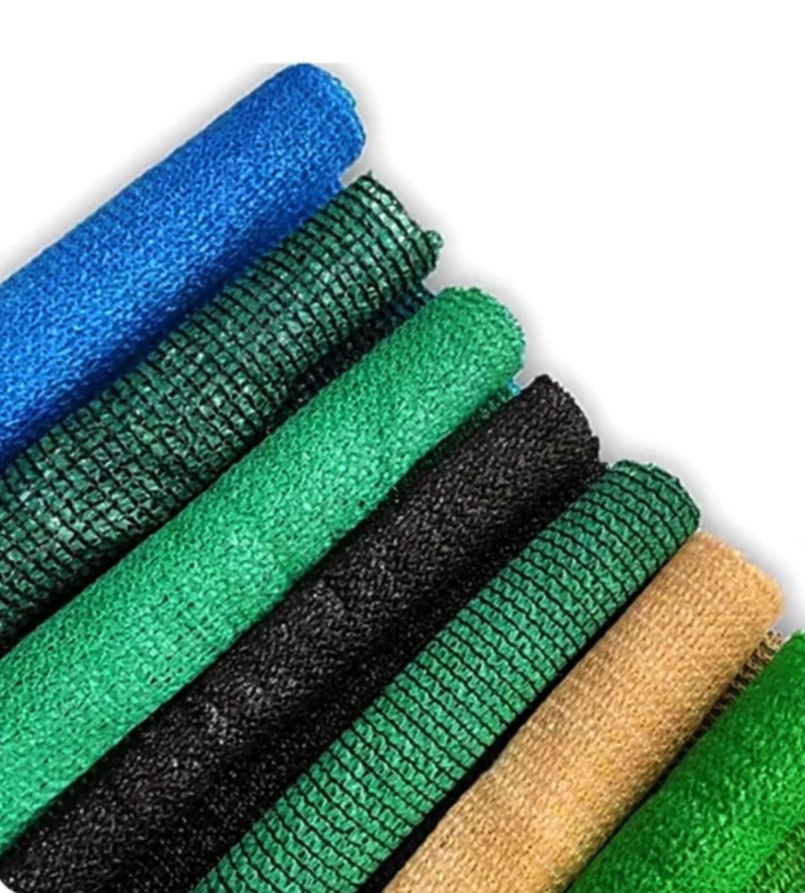